Florence Mary Gardiner, Evolution of Fashion. Davis, ed. from the 1897 edition. [eng]. Cited by chapter/paragraph.
Passages vii.1-vii.38
urn:cts:fuTexts:gardiner.eof.davis:vii.1-vii.38
vii.1CHAPTER VII.
vii.2ECCENTRICITIES OF MASCULINE COSTUME.
vii.3"The fashion wears out more apparel than the man."
vii.4--_Much Ado about Nothing._
vii.5"Through tattered clothes small vices do appear, Robes and furred gowns hide all."--_King Lear._
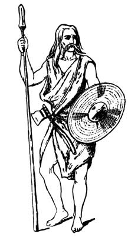
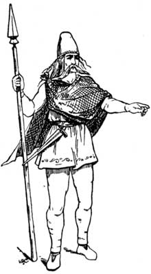
vii.8"Vanity, thy name is woman," "As vain as a woman," and similar epithets, are hurled at our defenceless heads by our teachers and masters; yet how few of them pause for a moment to consider whether they are altogether free from this human weakness or exempt from that love of dress which they so strongly condemn in others. It does not require a deep study of the history of costume to reveal some curious anomalies in this respect, and the sketches chosen for the purpose of illustrating this chapter will only give a faint idea of what has been considered appropriate and becoming to the manly form at different epochs. In Pelautier's "Histoire des Celtes," we learn that "the toilet of the ancient inhabitants of Britain, somewhat resembled that of the North American Indian of the present day, and consisted of a series of elaborate paintings over the whole surface of the body, which were no doubt originally intended to protect the skin, from the inclemencies of the weather, but were afterwards used as a mode of embellishment and a means of distinguishing the different classes, for it was reserved to freemen, and strictly forbidden to slaves. The lower classes confined themselves to small designs drawn at a considerable distance from each other; but the nobles had the privilege of ornamenting their persons with large figures, chiefly of animals, subsequently transferred to their shields, after they adopted a less scanty costume, and this may be looked upon as the origin of family arms." The Picts, who inhabited the north of Britain, were remarkable for their pictorial decorations, hence their name, derived from an ancient word, _picti_, which signifies painted. Our remote ancestors also added to their other charms (which were doubtless irresistible to the belles of that period), by deepening the tone of their naturally ruddy locks, by washing them in water boiled with lime. Their clothing was of skins of animals killed in the chase, and they were armed with implements of bone and flint. The Tyrian traders taught them how to construct various weapons of war from a composition of copper and tin, and their flat wicker shields were superseded by those of metal ornamented with concentric circles. After the Roman Conquest of Britain, the skin garments were laid aside for dyed tunics and close trousers. Over the tunic was worn a sagum, or short cloak, so named by the Romans from _saic_, a word of Celtic origin, which signified a skin or hide. When the head was covered it was with a cap, from the British _cab_, a hut, which, from its circular shape, it somewhat resembled, for the dwelling-places were composed of wattles firmly fixed in the ground and fastened together at the top. A curious remnant of this fashion is the horn-like cap of rushes still made by Welsh children. The hair was usually long and flowing. Men of rank shaved the chin and allowed the moustache to grow to an extraordinary length.
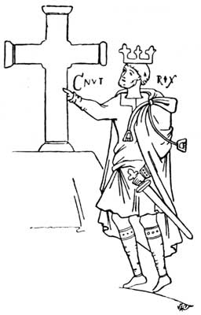
vii.10The Saxons and Danes are spoken of as wearers of "scarlet, purple, and fine linen," and the latter combed their hair once a day, bathed once a week, and frequently changed their clothing. By these means they found favour in the eyes of the women, and delighted the wives and daughters of the nobility. In a curious MS., written in the reign of King Canute, the monarch is represented in a tunic and mantle embellished with cords and tassels. The tops of his stockings are embroidered, but he wears simple leather shoes. A vestment presented by Canute to Croyland Abbey was of silk, embroidered with golden eagles, and the rich pall which he ordered to be laid over the tomb of Edmund Ironside, was "embroidered with the likeness of golden apples and ornamented with pearls." From this, we see that the needle played an important part in the ornamentation of clothing, and to it we also owe the splendid Bayeux tapestry, worked by Matilda, wife of William the Conqueror. This priceless curiosity is not only remarkable as a magnificent piece of workmanship, but affords a good idea of the dress of that period--the 11th century. A tunic reaching to the ankle, leg bandages and shoes, a flowing mantle and flat cap, were the chief characteristics of the civil dress of this and succeeding reigns. The Normans, however, were clean-shaven.
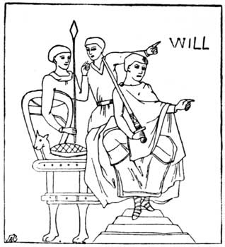
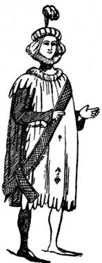
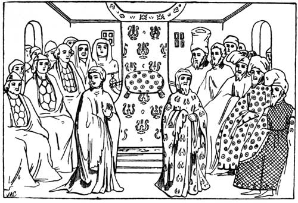
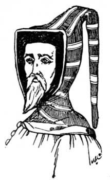
vii.15During the Middle Ages extravagance prevailed in both male and female costume. Handsome furs were in great request, and several times sumptuary laws were passed. Men wore eight indispensable articles of dress, the shirt, breeches, stockings, shoes, coat, surcoat or cotehardie, mantle, and head dress. The coat or under-dress corresponded with the tunic of the ancients, and was entirely hidden, with the exception of the sleeves, by the surcoat. There were two kinds of mantles, one open in the front, the two sides connected by a strap resting on the chest, the other was open on the right side and had one end thrown over the left shoulder. Head coverings were of various descriptions; but many adopted hoods with long points, which were used to attach them to the belt when not in use. The assembling of Parliament in the reign of Richard II. gives the lay, spiritual, and legal peers in their usual costumes, and is reproduced from Planche's "History of British Costume." The Bishops are in cowls near the throne, the judges in coifs and furred robes, the Earls of Westmorland and Northumberland stand in front. The Duke of Hereford, in high cap, is to the left of the throne, and Exeter, Salisbury, and other peers are seated opposite the judges. During the reign of Richard II., which lasted over twenty years (1377 to 1399), there were many curious fashions in masculine attire. The peaked shoes, chained to the knee, were not more ridiculous than the deep, wide sleeves commonly called pokeys, which were shaped like a bagpipe and were worn by all classes. Many writers refer to them as the devil's receptacles, as whatever could be stolen was hidden away in their folds. Some were wide and reached to the feet, others to the knee, and they were full of slits. Hose were often of different colours. Parti-coloured suits were also in favour, and these were frequently scalloped at the edges and embroidered with mottoes and other devices. Chaucer, who wrote the "Canterbury Tales" towards the end of Richard's reign, describes in the most graphic manner the apparel of his contemporaries. "The haberdasher, carpenter, weaver, dyer, and tapestry worker, all wealthy burghers of the City of London, were clothed in a livery, and the handles of their knives, pouches, and girdles were ornamented with silver. The clergy were not to be distinguished from the laity, and rode on horseback, glittering with gold, in gowns of scarlet and green, fine with cut work. Their mitres embellished with pearls like the head of a queen, and staffs of precious metals set with jewels." Even the parish clerk is said to be "spruce and foppish in his dress." The author of an anonymous work called the "Eulogium," of this date, says:--"The commoners were besotted in excess of apparel. Some in wide surcoats reaching to their loins, some in a garment reaching to their heels, closed before and sticking out at the sides, so that at the back they make men seem like women, and this they call by the ridiculous name _gowne_. Their hoods are little, and tied under the chins. Their lirri-pipes (tippets) pass round the neck, and hanging down before, reach to the heels."
vii.16Towards the end of the 14th century men began to wear short clothes made to fit the body so closely that it often required the assistance of two people to remove them, and it is from this period we can distinctly trace the difference between ancient and modern dress; in fact, our present fashions--masculine and feminine--resemble to a certain extent those worn during mediAeval times. Then, as now, men wore overcoats with tight sleeves, felt hats also with feathers, worn over a skull cap, and slung behind the back, and closely-fitting shoes and boots.
vii.17The Tudor monarchs paid considerable attention to the adornment of their persons, and were responsible for stringent legal enactments calculated to encourage home manufacturers. Felt hat-making--one of our oldest industries--was introduced into this country from Spain and Holland. A great impetus was given to this branch of trade by a law passed in 1571 which enjoined "every person above the age of seven years to wear on Sundays or holidays a cap of wool, knit made, thickened, and dressed in England by some of the trade of cappers, under the forfeiture of three farthings for every day's neglect." In 1603 the felt makers became a Corporation with grants and many privileges. Throughout the Middle Ages the upper classes frequently engaged in commerce. Bishops, abbots, and nobles personally superintended the disposal of the produce of their estates, and a considerable number of the younger sons of good families were the leading traders of the 15th and 16th centuries.
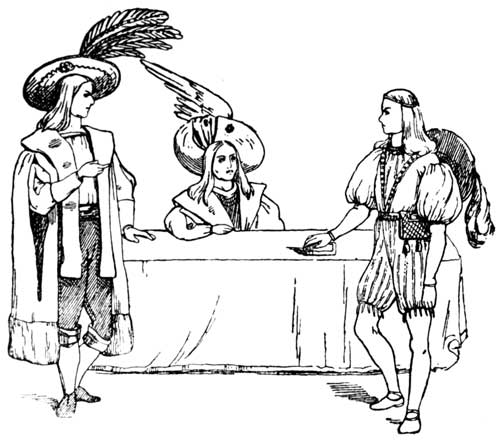
vii.19The "frocke" frequently mentioned, and of which the modern frock coat is the degenerate descendant, was a sort of jacket or jerkin made occasionally with skirts, a style associated especially, with Holbein's portraits of Henry VIII. and his contemporaries.
vii.20The uniform worn at the present day by the Yeomen of the Guard stationed at the Tower of London, gives us the military costume of the Tudor period. It is the oldest corps in her Majesty's service, and was instituted by Henry VII. as the bodyguard of the sovereign. In the dress of the Bluecoat Boys at Christ's Hospital we have that of the citizens of London during the reign of Edward VI. and Mary, when blue coats were habitually used by apprentices and serving men, yellow stockings also were in common use. The badges on the jackets of firemen and watermen date from this time; they were made of metal and placed on the sleeve, in the 16th century, instead of being embroidered on the back or breast of the garment as they had been previously. Retainers in the households of the wealthy, were provided with surcoats and mantles twice a year, of their patron's favourite colour, and this was called the _livree_, from a French word signifying to distribute. Trade guilds and members of the learned professions, also adopted a distinct style of costume. Lawyers, who were originally priests, of course wore the tonsure; but when the clergy ceased to interfere with secular affairs the lay lawyer continued this sign of office, and also wore a coif. Their gowns were capacious and lined with fur: and the Justices of the King's Bench were allowed liveries by the King, of cloth and silk. Budge, or lambskin, and miniver were provided for the trimming thereof, and the colour appears to have varied in different reigns, but for a long time green prevailed.
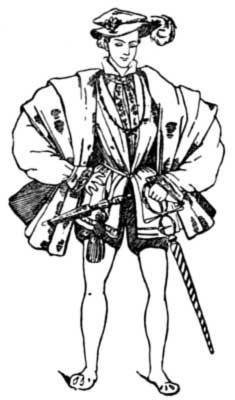
vii.22The courtiers of Elizabeth discarded the "frocke cote" for quilted and stuffed doublets and trunk hose, slashed and ornamented in the most quaint and extravagant manner. Below these were worn stockings embroidered with birds, beasts, and other devices, "sewed up close thereto as though they were all of one piece." Trunk hose were appropriately named, as they were often filled with wool, bran, and other materials. At last they became of such enormous size that it was necessary to construct swings in the Houses of Parliament in place of the ordinary fixed seats, for the accommodation of those wearing this singular article of attire. Enormous ruffs of muslin and lace encircled the necks of dandies of the Elizabethan era, and they appear to have had waists which would excite the envy of the belles of the latter part of the 19th century. In fact, the gallants of that day were even in advance of the fair sex, in their love of fantastic costume; and as Hollingshead, in _The Chronicle_, justly states in reference to the fashions of the period: "Nothing was more constant in England than inconstancy of attire."
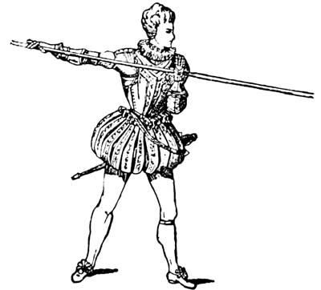
vii.24A few years since, behind some ancient panelling at Haddon Hall, Derbyshire, was discovered a washing bill (with other things appertaining to the 16th and 17th centuries) which gives us a good idea of the various articles of dress then worn. Reference is made to the _ruff_, which is too well known to need description; to _bandes_ made of linen and cambric, from which those now used by the clergy took their origin, and from which we derive the modern word bandbox. There were three kinds--some that stood upright, others were allowed to lie flat upon the shoulders, as shown in the drawings of Charles I. and II., and those which were embroidered and trimmed with lace. The _shirt_ applied to the under-garment of both sexes, and the half-shirt referred to the stomacher over which the dress was laced. _Boot hose_ were made of a variety of materials, and were occasionally called nether stocks; _socks_ were sometimes put over them; and _tops_ were of Holland linen or lace, and formed the lining of the full hanging boots of the Cavaliers.
vii.25[Illustration: CHARLES I.]
vii.26During the Civil War the dress worn by the King's adherents, consisted of a doublet of silk or satin with loose sleeves, slashed up the front; the collar was generally of point lace, and a short cloak rested carelessly on one shoulder. The hat was a broad-brimmed beaver with a plume of feathers, and trunk hose gave way to breeches. The Roundheads or Republican Party went to the opposite extreme. They cut their hair close, avoided lace and jewels, had plain linen or cloth suits of a grey or brown tint, with a hat somewhat resembling the modern chimney pot.
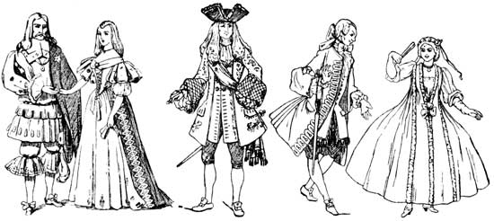
vii.28[Illustration: WILLIAM III. (1694)]
vii.29[Illustration: GENTLEMAN AND LADY OF 18TH CENTURY.]
vii.30* * * * *
vii.31About this period we also hear of the waistcoat, which was cut high at the neck, and was made with sleeves. Neckcloths and cravats of Brussels and Flanders lace were tied in a knot under the chin, and had square ends. Another peculiar feature of masculine costume towards the end of the 17th century consisted of petticoat breeches with drooping lace ruffles, such as adorn the nether limbs of Charles II. Patches and perukes were also adopted, and the former fashion, a revival of an old Roman custom, had political significance according to where they were placed on the face, and were bitterly ridiculed by numerous satirical writers. "I know many young gentlemen," says Middleton, in one of his plays, "who wear longer hair than their mistresses." The beard was worn in different ways, but the most usual shape was what Beaumont and Fletcher, in their "Queen of Corinth," call the T beard, consisting of a moustache and imperial:--
vii.32"His beard, Which now he put i' the form of a T, The Roman T; your T beard is the fashion, And two-fold doth express the enamoured courtier."
vii.33Shakespeare also tells us, it was often dyed different colours.
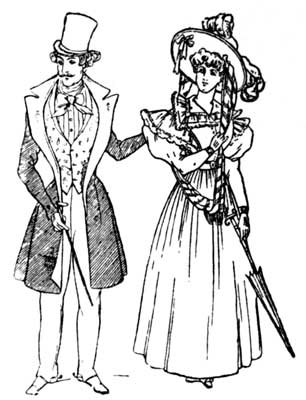
vii.35Everyone tried to rival his neighbour in the size of his peruke, till they became so preposterous that Charles II. showed his disfavour by writing a letter to the University of Cambridge forbidding the members to wear periwigs, smoke tobacco, or read their sermons. History does not relate what effect the King's censure had upon the head-gear of students attending the colleges, but it is absolutely proved that they paid no heed to his latter commands. It was the fashion for men to comb their perukes in public, and curiously-chased combs of bone and tortoise-shell, were carried in the pocket with the snuff-box, another indispensable appendage of a fine gentleman.
vii.36In the 18th century the broad hat brims were turned up at the sides, and, in the racy vernacular of the day, "each gallant cocked his hat according to his fancy." Shoe buckles became general in the reign of Queen Anne, and displaced the ribbon rosettes formerly worn. Planche accurately describes the fashions of that day. "The square-cut coat was stiffened with wires and buckram, and the long-flapped waistcoat with pockets almost met the stockings. There were hanging cuffs with lace ruffles, square-toed shoes with red heels, and hats laced with gold or silver galloon."
vii.37At the beginning of the 19th century many important changes took place. Excepting for Court dress, cloth was substituted for velvet and other rich fabrics. The coat was open, displaying an elaborate shirt-front, stock and flowered waistcoat; and the skirt, though full, fell in natural folds. Trousers were very tight, and held in place by a strap beneath the foot, and hats displayed narrow curved brims.
vii.38We have only to cast our eyes down the vista of ages to find that British costume has been suited to the needs, habits, and customs of the people, and periods at which it was worn. Skins of animals were appropriate to the hardy cave dwellers who inhabited this country at an early period in the world's history. The simple dress of the Anglo-Saxons fulfilled the requirements of a primitive race; and the furs and rich fabrics brought home by the Crusaders were adapted to the higher state of civilization which prevailed in the Middle Ages. In the 16th century the Renaissance (of art and culture) was specially noted for richness of attire. During the 18th century a mixture of styles which had found favour with previous generations was the most marked feature in the costume of that period, and this equally applies to the two first decades of the present one. Masculine attire at the present day, though simple and practical, has few points of beauty to recommend it. Briefly, it resolves itself into a series of woollen cylinders which changeth not from generation to generation.